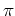

Next: fzt
Up: The commands in alphabetical
Previous: fwt2d_wav_filter
Contents
Subsections
fwtsph
Framed Wavelet Transforn on the sphere
Syntax
out = fwtsph( mat, wavname, ...
[,'WaveletOptionName', WaveletOptionValue], ...
[,'a0', a0], [,'tg'], [,'voice', voice]);
Description
Input Data
- mat
- [REAL MATRIX]: The spherical signal on an equiangular
spherical grid. Its size must be
2M +1x2N with M and N positive integer.
- wavname
- [STRING]: The name of the spherical wavelet (for
instance 'dog').
- WaveletOptionName, WaveletOptionValue
- [STRING, MISC]:
The wavelet parameter name (a string) is followed by its value. See the corresponding
wavelet mfile (inside continuous/sphere/wav_defs) to know the
parameters to enter.
- a0
- [REAL]: the scale to start de scale sequence according
to the rule selected ('tangential' or 'dyadic'). Default value: a0 = 4.
- tg
- [BOOL]: Use a tangential scale sequence, that is
aj = a0tan((/4)2-j), instead of the default dyadic one, i.e.
aj = a02-j
- voice
- [INT]: Number of voice in each scale octave. Default
value: 1.
Output Data
- out
- [SRUCT]: Structure containing the frame
coefficients. Imortant fields are:
- out.img
- [REAL MATRIX]: the orignal matrix;
- out.wavname
- [STRING]: the name of wavelet;
- out.wavopts
- [MISC]: the parameters of the wavelet;
- out.J
- [INT]: the number of scale equals to M - 1;
- out.jv
- [INT VECTOR]: scale index;
- out.a0
- [REAL]: the initial scale where the scale sequence is starded;
- out.a
- [REAL VECTOR]: the scale sequence;
- out.nth
- [INT]: number of theta values in the spherical grid;
- out.nph
- [INT]: number of phi values in the spherical grid;
- out.lth
- [INT]: log2(out.nth -1);
- out.lph
- [INT]: log2(out.nph);
- out.th_step
- [INT VECTOR]: number of points between two adjacent
theta angles in function of scale;
- out.ph_step
- [INT VECTOR]: number of points between two adjacent
phi angles in function of scale;
Example(s)
>> load world
>> yashow(mat,'spheric','fig',1);
>> wav=fwtsph(mat,'dog'); %% It's time to drink a cup of coffee!
>> yashow(wav.data{1},'spheric','fig',2);
>> yashow(wav.data{2},'spheric','fig',3);
>> yashow(wav.data{3},'spheric','fig',4);
>> yashow(wav.data{4},'spheric','fig',5);
>> yashow(wav.data{5},'spheric','fig',6);
>> yashow(wav.data{6},'spheric','fig',7);
>> yashow(wav.data{7},'spheric','fig',8);
>> yashow(wav.data{8},'spheric','fig',9);
References
See Also
discrete/frames/sphere/fwtsph.m
Next: fzt
Up: The commands in alphabetical
Previous: fwt2d_wav_filter
Contents